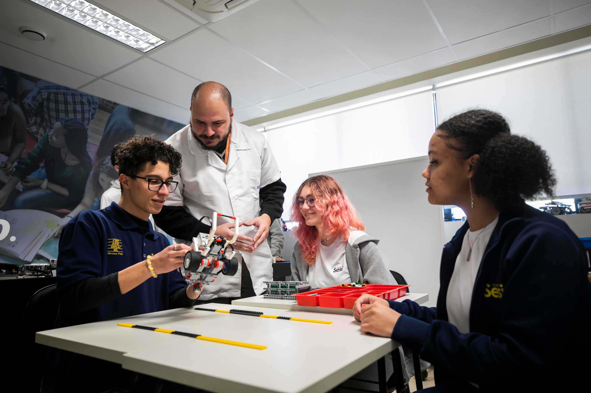
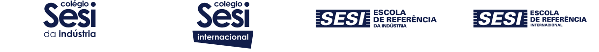
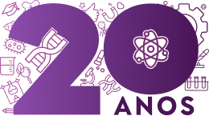
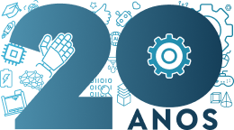
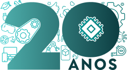
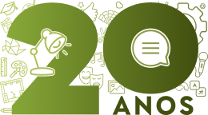
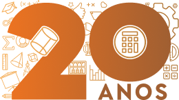

A Educação Básica do Sesi Paraná há 20 anos revoluciona o ensino, preparando estudantes para os desafios da indústria e do mundo digital. Nossa metodologia inovadora, baseada no conceito maker, estimula a criatividade, o pensamento crítico e o protagonismo dos alunos.
Com um ambiente colaborativo e tecnologias de ponta, os estudantes desenvolvem habilidades essenciais para o futuro, explorando na prática soluções para desafios reais.

Quer entender como essa metodologia transforma o aprendizado?
Conheça mais sobre nosso modelo de ensino inovador.
Na Escola Básica de 1º ciclo, a metodologia STEAM integra as áreas de Ciências, Tecnologia, Engenharia, Artes e Matemática com o objetivo de promover uma aprendizagem interdisciplinar e contextualizada, baseada na resolução de problemas reais e no desenvolvimento da criatividade e inovação.

Estimula a investigação e o pensamento crítico por meio da experimentação em diferentes subáreas.

Foca na aplicação prática do conhecimento para criar soluções para problemas reais através de projetos e protótipos.

Promove a utilização das novas tecnologias como ferramentas essenciais no processo de ensino-aprendizagem.

Desenvolve a expressão criativa dos alunos através do contato com diferentes formas artísticas.

Estimula o raciocínio lógico e abstrato por meio da resolução de problemas matemáticos.
Preencha o formulário para receber informações exclusivas da Educação Básica do Sesi.

Metodologia de ensino inovadora, que ajuda a desenvolver o conhecimento e competências importantes para todos os desafios da vida.
Conheça
Educação que trabalha o desenvolvimento do conhecimento e de competências com Imersão Bilíngue, Trilíngue e cultura estrangeiras.
ConheçaA Unidade em São José dos Pinhais foi selecionada para ser a primeira escola a oferecer as novidades tecnológicas e pedagógicas da rede Sesi no Brasil.
ConheçaCom uma proposta pedagógica inovadora, unimos a tecnologia da Escola Sesi de Referência da Indústria com o ensino bilíngue do Colégio Sesi Internacional.
Conheça